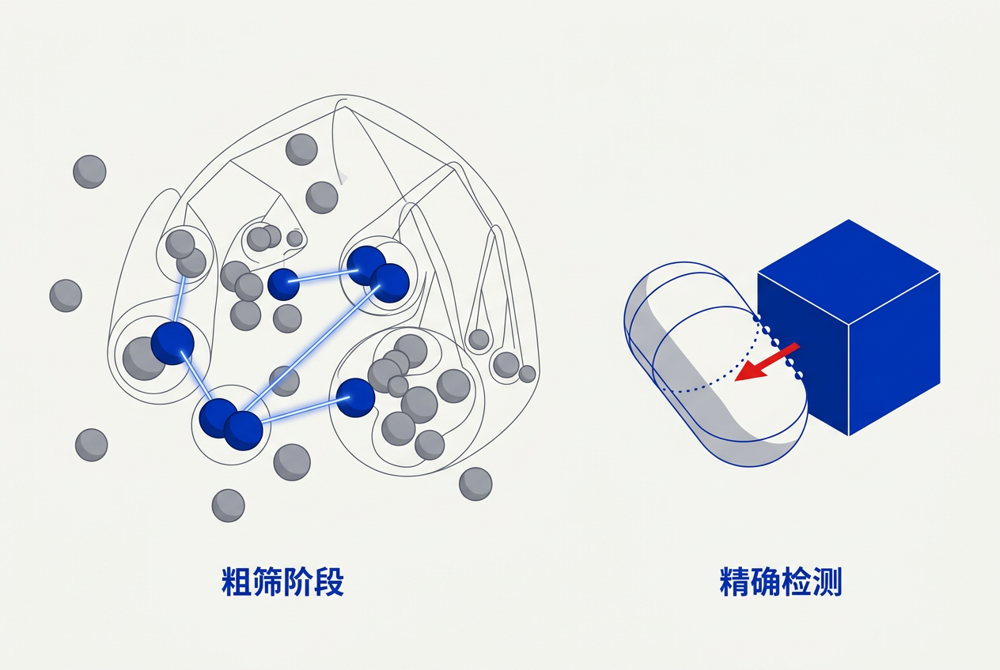

第14章：碰撞与刚体动力学 — 零基础讲义
讲义说明
本讲义基于 Jason Gregory 所著《Game Engine Architecture Volume II》第4版第14章（Collision and Rigid Body Dynamics, p.335-424），逐节翻译推导。碰撞检测是游戏物理的基石，也是计算几何中最具挑战性的实时算法之一。
本版插画由 ImageGen + Guizang 材质插画标准流程生成。
学习目标
- 理解碰撞检测的 Broad Phase / Narrow Phase 两阶段架构及常见算法
- 掌握刚体动力学基础（F=ma、冲量、约束、积分器）
- 了解主流物理中间件（PhysX/Havok/Bullet/Jolt）的集成方式
- 理解游戏物理和"真实物理"的区别——游戏物理首先要"好玩"
- 了解布娃娃、布料、破坏等高级物理特性
14.1 游戏需要物理吗？
14.1.1 物理在游戏中的角色演变
14.1.1.1 从预渲染到实时模拟
早期游戏（DOOM、Quake）几乎没有物理——角色碰撞用简单AABB检测，爆炸是预录动画。2004年Half-Life 2的重力枪标志着实时物理从"可有可无的噱头"变成"核心玩法"。今天的游戏——从塞尔达的物理谜题到GTA的车辆碰撞——物理已经整合到游戏设计的最深层面。
14.1.1.2 "好玩"优先于"正确"
生活类比： 马里奥跳起后下落加速度 ≠ 9.8m/s²——真实重力下他跳不够高。游戏物理被调整到"手感最好"。赛车游戏重力减弱让特技更精彩，格斗游戏重力加强让角色快速落地。游戏物理是真实物理的"戏剧化版本"。
14.1.2 物理中间件生态
14.1.2.1 主流选择一览
| 引擎 | 开发商 | 知名游戏 | 关键特性 |
|---|---|---|---|
| PhysX | NVIDIA | 绝大部分Unreal/Unity 3A游戏 | GPU加速、布料/流体、最广泛生态 |
| Havok | Microsoft | 使命召唤、刺客信条、荒野大镖客2 | 主机优化出色、工具链成熟 |
| Bullet | 开源 | GTA V、Red Dead Redemption 2 | 免费、跨平台、C++源码可改 |
| Jolt Physics | 开源（Jorrit Rouwe） | Horizon Forbidden West | 新一代设计、简洁API、确定性模拟 |
极少有工作室自己写物理引擎——这是行业中少有的"完全没有争议"的结论。
14.2 碰撞检测系统

14.2.1 两阶段架构
14.2.1.1 为什么需要两个阶段？
场景中有 10,000 个物体，两两测试需要 C(10000,2) ≈ 5000万次 Narrow Phase 检测。即使用最快的GJK算法（每次~1μs），也要 50 秒——一帧才 16.7ms！Broad Phase 把候选对从 5000 万缩小到几百，Narrow Phase 再逐对精判。
14.2.2 Broad Phase 算法
14.2.2.1 三种经典算法
| 算法 | 原理 | 优缺点 |
|---|---|---|
| 空间哈希（Spatial Hash） | 世界切成格子→物体放入格子→只在同格/邻格检测 | 极快O(n)但格子大小敏感 |
| 扫描裁剪（Sweep and Prune） | 按坐标轴排序包围盒→只比较重叠区间 | 对移动少的物体极高效 |
| BVH（包围体层级树） | 建立物体包围盒的树结构→递归遍历检测 | 最通用、现代引擎主流 |
14.2.2.2 空间哈希的核心思想
// 空间哈希简化实现
struct SpatialHash {
float cellSize = 2.0f; // 每格2米
unordered_map<int64_t, vector<Collider*>> cells;
void Insert(Collider* obj) {
// 把物体放入它覆盖的所有格子
for (int x = gridMin.x; x <= gridMax.x; x++)
for (int y = gridMin.y; y <= gridMax.y; y++)
for (int z = gridMin.z; z <= gridMax.z; z++)
cells[Hash(x,y,z)].push_back(obj);
}
void FindPairs() {
for (auto& [hash, objects] : cells) {
// 只在同一个或相邻格子内检测碰撞
for (int i = 0; i < objects.size(); i++)
for (int j = i+1; j < objects.size(); j++)
if (AABBOverlap(objects[i], objects[j]))
NarrowPhase(objects[i], objects[j]);
}
}
};14.2.3 Narrow Phase 算法
14.2.3.1 GJK ——现代碰撞检测的核心
GJK（Gilbert-Johnson-Keerthi）算法是检测任意两个凸形状是否相交的标准方法。它的精妙之处：不求显式的交集，而是迭代地判断两个形状的 Minkowski 差是否包含原点——包含原点=相交。
// GJK的核心思想（极大简化）
bool GJK(Shape A, Shape B) {
// 构建 A 和 B 的 Minkowski 差的近似（一个单纯形——点/线/三角形/四面体）
Simplex simplex;
Vector3 direction = (A.center - B.center);
while (true) {
Vector3 supportPoint = Support(A, B, direction);
// supportPoint = A的最远点(direction) - B的最远点(-direction)
if (Dot(supportPoint, direction) < 0)
return false; // 无法包含原点→不相交
simplex.Add(supportPoint);
if (simplex.ContainsOrigin())
return true; // 单纯形包含原点→相交！
direction = simplex.ClosestPointToOrigin();
}
}14.2.3.2 EPA——扩展深入计算穿透信息
GJK 只告诉你"是否相交"。EPA（Expanding Polytope Algorithm）在GJK的结果单纯形上向外扩展，找到最接近原点的 Minkowski 差表面点——这个距离就是穿透深度，方向就是碰撞法线。
14.2.4 碰撞形状
14.2.4.1 从快到精的光谱
// 碰撞形状速度排名（最快→最慢）
① 球体： 圆心+半径，测试=距离比较（~2ns）
② 胶囊： 线段+半径，角色碰撞标配（~5ns）
③ 盒子/OBB： 中心+半长+朝向（~8ns，SAT算法）
④ 凸包： 任意凸多面体（~50ns，GJK）← 这是游戏中最常用的精确形状
⑤ 高度场： 地形碰撞（~20ns，射线投射）
⑥ 三角网格： 完整几何（~500ns+，通常分解为凸包集）14.2.4.2 为什么角色用胶囊而不是精确轮廓？
三个原因：① 速度（胶囊测试比网格快 100+倍）。② 平滑（没有尖角——沿墙跑不会卡住）。③ 精度够用（玩家不会看到碰撞体）。
14.2.5 碰撞响应
14.2.5.1 检测到碰撞后的四步操作
// 碰撞响应流程
1. 计算穿透深度 & 法线 ← EPA 算法输出
2. 分离重叠物体 ← 各推一半穿透距离（或按质量比例）
3. 施加冲量 ← 改变速度模拟"弹开"
J = -(1+e) * Vrel·n / (1/mA + 1/mB) // 碰撞冲量公式
4. 触发回调 ← 播放音效/粒子/伤害/脚本事件14.2.5.2 接触流形（Contact Manifold）
真实碰撞不是"一个点"——两个面接触时生成多个接触点集合（典型4点），每个点独立计算摩擦力和法向力。这对稳定性至关重要——单点接触的物体会旋转不稳定。
14.3 刚体动力学
14.3.1 牛顿力学基础
14.3.1.1 六自由度刚体状态
// 刚体的完整状态（13个分量）
struct RigidBody {
// 线运动（3 DOF）
Vector3 position;
Vector3 linearVelocity;
// 角运动（3 DOF）
Quaternion orientation;
Vector3 angularVelocity;
// 质量属性
float mass;
float invMass; // 1/mass（静物=0）
Matrix3x3 inertiaTensor; // 转动惯量
};14.3.2 数值积分
14.3.2.1 三种积分器
| 方法 | 公式 | 稳定性 | 用途 |
|---|---|---|---|
| 显式Euler | v+=a·dt; x+=v·dt | 差（能量不守恒） | 教学原理 |
| 半隐式Euler | v+=a·dt; x+=v·dt（先v后x） | 较好（广泛使用） | 游戏物理标配 |
| Verlet | x(t+dt)=2x(t)-x(t-dt)+a·dt² | 极好（能量守恒） | 粒子/布料/分子模拟 |
// 半隐式 Euler——游戏物理的行业标准
void Integrate(RigidBody& body, float dt) {
// ① 先更新速度
body.linearVelocity += (body.netForce * body.invMass) * dt;
body.angularVelocity += (body.invInertiaTensor * body.netTorque) * dt;
// ② 用新速度更新位置（半隐式的关键）
body.position += body.linearVelocity * dt;
body.orientation = Quaternion::Integrate(body.orientation, body.angularVelocity, dt);
// ③ 清除累积力（下一帧重新计算）
body.netForce = Vector3::Zero;
body.netTorque = Vector3::Zero;
}14.3.3 约束（Constraints）
14.3.3.1 从简单到复杂的约束类型
| 约束 | 限制的自由度 | 游戏应用 |
|---|---|---|
| 接触约束 | 穿透方向（1 DOF） | 地面碰撞、墙壁碰撞 |
| 铰链（Hinge） | 仅绕1轴旋转（5 DOF受限） | 门、肘、膝 |
| 球窝（Ball-Socket） | 位置固定、自由旋转（3 DOF受限） | 肩、髋 |
| 滑轨（Slider） | 仅沿1轴平移（5 DOF受限） | 活塞、电梯 |
| 固定（Fixed） | 完全绑定（6 DOF全受限） | 焊接复合体 |
14.3.3.2 布娃娃（Ragdoll）实现
把角色骨骼每一根替换为刚体，关节替换为对应约束。死亡时从主动动画突然切换到物理模拟——各刚体受重力+惯性+约束作用自然"瘫倒"。
// 布娃娃的约束映射
骨骼: Spine → 刚体: SpineBody
关节: Shoulder → 约束: BallSocket(ClavicleBody, UpperArmBody)
关节: Elbow → 约束: Hinge(UpperArmBody, ForearmBody)
关节: Knee → 约束: Hinge(UpperLegBody, LowerLegBody, limitMin=-5°, limitMax=130°)
// 膝不能反弯（限制旋转范围），肘同理这是约束求解器不收敛的表现。当多个约束互相矛盾时（如肘铰链和肩球窝产生冲突的力），求解器在有限迭代次数内无法找到一致的解，导致残余能量来回传递→抖动。解决方案：①增加约束求解迭代次数 ②降低关节最大力 ③死亡后对身体部位加额外阻尼。
14.4 集成物理引擎
14.4.1 物理世界与游戏世界的桥梁
14.4.1.1 典型的三层架构
// 游戏对象 ↔ 物理代理 ↔ 物理引擎
class GameObject {
PhysicsActor* physicsBody; // PhysX/Havok的物理代理
Transform renderTransform;
};
// 每帧同步：物理 → 渲染
void SyncPhysicsToRender() {
for (auto& obj : dynamicObjects) {
if (obj.physicsBody) {
obj.renderTransform = obj.physicsBody->GetWorldTransform();
}
}
}
// 角色移动：游戏逻辑 → 物理
void MoveCharacter(GameObject& player, Vector3 input) {
Vector3 targetVel = input * player.moveSpeed;
Vector3 currentVel = player.physicsBody->GetLinearVelocity();
// 应用冲量让角色加速到目标速度
player.physicsBody->AddForce((targetVel - currentVel) * player.mass / dt);
}14.4.1.2 游戏物理的"作弊"清单
- 重力被调低/高——修改 gravity 常量
- 子弹用 Raycast 而非模拟弹道——即时光线检测，无限速度
- 角色碰撞体比视觉模型小——减少"我以为能过去"的卡住
- "Coyote Time"——玩家跑出悬崖后还有几帧可以跳跃（真实物理没有）
- 空气控制——在空中改变移动方向（真实物理不允许）
14.5 高级物理特性
14.5.1 可破坏物体
14.5.1.1 预碎裂 vs 实时断裂
预碎裂： 美术师手动把物体切成碎片，碰撞时碎片飞到预设位置→激活物理。Unreal Chaos Destruction 的主流方式。实时断裂： 物理引擎实时计算断裂平面+生成碎片。效果好但计算量巨大，当前游戏较少使用。
14.5.2 布料模拟
14.5.2.1 质点-弹簧网络
布料 = 规则网格上的质点（粒子）+ 弹簧连接（结构弹簧保持形状+弯曲弹簧对抗折叠）。每个质点受重力+弹簧力+碰撞响应作用。GPU 计算着色器可同时模拟数万个质点。
14.5.3 车辆物理
14.5.3.1 射线投射悬挂
游戏中最常用的车辆模型：4个轮子=4条向下的射线。每条射线和地面碰撞距离 = 悬挂压缩量。根据 Hooke 定律计算弹簧力推回车体向上。引擎力施加在驱动轮切线方向。
本章核心洞察
碰撞检测和物理模拟是两门完全不同的学科：碰撞检测是计算几何问题——必须精确；动力学是牛顿力学的数值解——可以容忍误差。"游戏物理"还有第三层："好玩"的微调——重力、摩擦力、冲量被参数调整到"手感最佳"而非"模拟最准"。这三层合起来才是完整的游戏物理。
三条准则：
1. Broad Phase 是性能核心： 99%的时间用于"不要做什么"，不是"做什么"——空间哈希和BVH是答案
2. GJK = 现代碰撞检测的心脏： 理解 Minkowski 差的概念比理解算法细节更重要
3. 别自己写物理引擎： PhysX/Havok/Jolt 已经解决了所有已知的物理难题——把精力放在"怎么用"上
📝 课后练习题（含答案）
Broad Phase: 快速过滤非碰撞对（用空间哈希/扫描裁剪/BVH）。Narrow Phase: 精确判断是否相交（GJK/EPA）。Broad Phase 算法：①空间哈希——世界切格子，同格检测。②扫描裁剪——按轴排序包围盒，只比较重叠的。
GJK 不直接求交集，而是判断"两个形状的 Minkowski 差是否包含原点"。它通过迭代构建单纯形来逼近答案——大多数情况几次迭代就出结果。高效原因：每次迭代只需要一次 Support() 函数调用。
显式：x+=v*dt; v+=a*dt（用旧v更新x→能量膨胀）。半隐式：v+=a*dt; x+=v*dt（用新v更新x→能量更好守恒）。虽然都是一阶方法，半隐式的稳定性显著优于显式。
骨骼→刚体，关节→约束。肘=铰链，肩=球窝。更新：重力+约束力→刚体速度→约束求解器迭代修正。抖动原因：约束求解器在有限迭代内不收敛（矛盾约束=残余能量来回传递）。解决方案：增加迭代/减少关节力/加阻尼。
① Coyote Time——跑出悬崖后几帧还能跳。② 空气控制——空中改移动方向。③ 子弹 Raycast——不模拟弹道。④ 角色碰撞体缩小——减少卡边。⑤ 重力调低——让跳跃更飘逸。
🤖 qAagent 零基础问答区
Minkowski差 A⊖B = {a-b | a∈A, b∈B}。它的关键性质：如果 A 和 B 相交，那么 A⊖B 一定包含原点（因为交点的a-b=0）。反过来也成立。所以碰撞检测问题转化为"Minkowski差包含原点吗？"——GJK算法就是高效地回答这个问题。
同样的输入→同样的物理结果（逐帧逐bit完全相同）。对网络游戏（特别是RTS Lockstep模式）至关重要。难点：浮点运算的精度因CPU而异（x86内部80bit，SSE用32/64bit），而且约束求解器中的迭代顺序略微不同就会放大为宏观差异。Jolt Physics是少数原生支持确定性模拟的引擎。
Unity 项目： 内置 PhysX（或新的 Unity Physics）。不用选择。
Unreal 项目： 内置 Chaos Physics。不用选择。
自己写引擎： Jolt Physics——MIT开源、API简洁、文档好、确定性支持。
学习物理引擎原理： 读 Box2D Lite（Erin Catto，1500行C++）——这是全功能2D物理引擎的最小教学版，一天能读完。
- 学习目标
- 学习目标
- 14.1 游戏需要物理吗？
- 14.1.1 物理在游戏中的角色演变
- 14.1.1.1 从预渲染到实时模拟
- 14.1.1.2 "好玩"优先于"正确"
- 14.1.2 物理中间件生态
- 14.1.2.1 主流选择一览
- 14.2 碰撞检测系统
- 14.2.1 两阶段架构
- 14.2.1.1 为什么需要两个阶段？
- 14.2.2 Broad Phase 算法
- 14.2.2.1 三种经典算法
- 14.2.2.2 空间哈希的核心思想
- 14.2.3 Narrow Phase 算法
- 14.2.3.1 GJK ——现代碰撞检测的核心
- 14.2.3.2 EPA——扩展深入计算穿透信息
- 14.2.4 碰撞形状
- 14.2.4.1 从快到精的光谱
- 14.2.4.2 为什么角色用胶囊而不是精确轮廓？
- 14.2.5 碰撞响应
- 14.2.5.1 检测到碰撞后的四步操作
- 14.2.5.2 接触流形（Contact Manifold）
- 14.3 刚体动力学
- 14.3.1 牛顿力学基础
- 14.3.1.1 六自由度刚体状态
- 14.3.2 数值积分
- 14.3.2.1 三种积分器
- 14.3.3 约束（Constraints）
- 14.3.3.1 从简单到复杂的约束类型
- 14.3.3.2 布娃娃（Ragdoll）实现
- 14.4 集成物理引擎
- 14.4.1 物理世界与游戏世界的桥梁
- 14.4.1.1 典型的三层架构
- 14.4.1.2 游戏物理的"作弊"清单
- 14.5 高级物理特性
- 14.5.1 可破坏物体
- 14.5.1.1 预碎裂 vs 实时断裂
- 14.5.2 布料模拟
- 14.5.2.1 质点-弹簧网络
- 14.5.3 车辆物理
- 14.5.3.1 射线投射悬挂
- 本章核心洞察
- 📝 课后练习题（含答案）
- 🤖 qAagent 零基础问答区